| IFS Labs |
| Finding IFS for Fractal Images. Given some
simple fractal shapes, we use the geometry of plane transformations to find the rules to make them. |
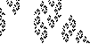 |
| Spiral Fractals from IFS. We can use
IFS to make spirals, but the decompositions are a bit more subtle than those of simple IFS. |
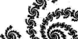 |
| Determining Affine Transformations. Knowing the
images Q1, Q2, and Q3 of three non-collinear points P1, P2, and
P3, we can find the affine transformation taking P1 to Q1, P2 to Q2,
and P3 to Q3. |
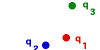 |
| A Fractal Leaf by IFS. Even for shapes that are not fractal, the
IFS approach can be used to generate an image of the shape. |
 |
| Fractal Wallpaper. Building outward instead of inward, we can
make fractal wallpaper from photos. |
 |
| Cumulative Gasket Pictures. How long must we play the chaos
game to recognize the pattern it generates? |
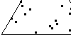 |
| IFS and Addresses. The transformations generating a fractral
provide a way to assign addresses to different parts of the fractal. These addresses will help us understand the patterns
in the Data Analysis by Driven IFS, Driven IFS and Financial Cartoons, and IFS with Memory Labs. |
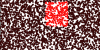 |
| Decimals as Addresses. As a simple example of addresses, we point out that
decimals are a familiar address structure on rulers. |
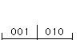 |
| Data Analysis by Driven IFS. Determining the order in
which IFS transformations are applied by a data sequence can reveal correlations in the data. |
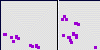 |
| Driven IFS and Financial Cartoons. The method of driven IFS can
be applied to multifractal finance cartoons. Can this help match cartoon parameters to the data? |
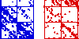 |
| IFS with Memory. A new class of images can be be
generated by precluding certain combinations of transformations. Can every image be built this way? |
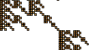 |
|
|
| Dimension and Measurement Labs |
| Dimension by Box-Counting. Cover a shape with
grids of ever-smaller boxes. How the number of boxes scales with the box size measures the dimension of the shape. |
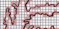 |
| Paper Ball and Bean Bag Dimensions. Crumpled paper is fractal,
bags of beans aren't. Why is this? How can we tell? |
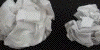 |
| Fractal Folds. Making (finite resolutions of) fractals
with paper and scissors. Some interesting measurements arise. |
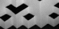 |
| Sierpinski Tetrahedron Project. An envelope can
be turned into a tetrahedron. With a lot of people making these, they can be assembled into a finite realization of a
Sierpinski tetrahedron. Why this shape is 2-dimensional makes sense when you stick your head into the central void of the
tetrahedron. |
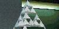 |
| Koch Tetrahedron Lab. Modifying the Koch curve construction to
apply to a tetrahedron, we obtain a curiosity. The limiting shape has dimension Log(6)/Log(2), and yet the limiting
shape appears to be a cube, a shape that surely has dimension 2. |
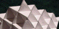 |
| Building Block Fractals: Their Dimensions and Measures. Here are three examples
of constructions with building blocks. Relations between perimeter, area, volume, and dimension are explored. |
|
|
|
| Iteraton Labs |
| Visualizing Iteration Patterns Some visual representations of iterates
of functions provide effective means for seeking patterns in the iterates. |
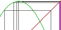 |
| Composition of Functions. With a simple variant of the graphical
iteration method we can visually compute the composition of functions. A corollary allows us to determine the domain and range
of the composition. |
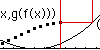 |
| Geometry of Complex Arithmetic. Familiar rules, apllied in the
right way, hint at why the Mandelbrot set contains so many spirals. |
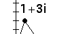 |
| Julia Sets and the Mandelbrot Set. Iterating a very simple complex
artihmetic formula produces remarkably beautiful images. A significant part of these complicated shapes can be understood
by finding repeating patterns. |
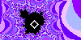 |
| L-Systems: Patterns with Grammar. These string rewriting systems are another
iterative process for building fractals. The additional grammar in L-systems allows us to build a richer variety of shapes. |
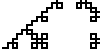 |
| Pascal's Triangle and its Relatives. Pascal's triangle, familiar from
learning binomial coefficients, can be generalized to produce other fractals, and to provide visual examples of cosets and
quotient groups from group theory. |
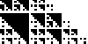 |
| Video Feedback Pointing a videocamera at a monitor can produce
interesting dynnamical images. Surrounding the monitor with mirrors can generate stable fractal images tha tcan be understood as IFS. |
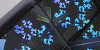 |
| Cellular Automata Explorations. Remarkably simple rules, applied iteratively, can
yield a bewildering variety of complicated patterns. But is it Life? |
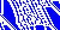 |
|
|
| Circle Inversion and Tiling Labs |
| Circle Inversions with Reflections. Reflection across a flat mirror is
familiar and easy to understand. Bend the mirror and we can find some properties of inversion in circles. |
|
| Circle Inversions with Software. Learning the basic geometry of
circle inversions with a Java program. |
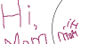 |
| Circle Inversions Fractals. Inversion in several circles can be
seen as a nonlinear variant of IFS. With three circles we can make Cantor sets, with four we can make Sierpinski gaskets,
with five, Sierpinski carpets. If the circles overlap ... much more interesting things can happen. |
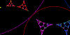 |
| Optical Gasket Lab. Four shiny spheres can make a
Sierpinski gasket by reflection, and can illustrate the Wada property of fractal basin boundaries. |
|
| Nonlinear Tessellations. How to make tilings of the hyperbolic
plane with compass and straightedge (or Geometer's Sketchpad). |
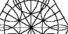 |
| Tilings with Fractal Perimeters. A simple Euclidean construction
of fractal perimeters. |
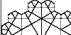 |
| Simple Fractal Tilings. With a basic graphics program we can generate
fractal tilings of the Euclidean plane. Howewever, some care is needed with the placement of the tiles. We present three methods,
including one that uses soem linear algebra and complex arithmetic. |
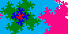 |
|
|
|